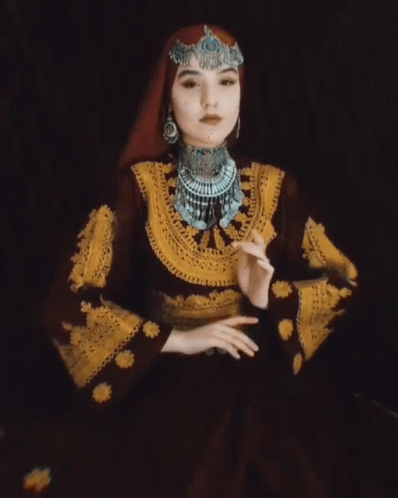

Giornalist: Hello, introduce yourself
Almas: Hello, my name is Almas, im 16 years old and im a afghan girl.
Giornalist: what is freedom for you?
Almas: For me it is the opportunity to travel, to thinkh, to study, to love everyone
Giornalist: what do you wish for afghan women?
Almas: I want the same rights as western women
Giornalist: Why?
Almas: because they are free
Giornalist: why can't women study in afghanistan?
Almas: because we have no rights
